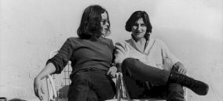
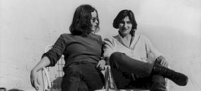
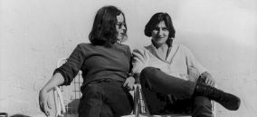

Recherches
Pour traiter la problèmatique j'ai choisi de me pencher sur les travaux de Donna Haraway. J'ai aussi voulu rendre hommage à Nathalie Magan qui a traduit le livre de Donna Haraway "The Cyborg Manifesto"
 

Pour traiter la problèmatique j'ai choisi de me pencher sur les travaux de Donna Haraway. J'ai aussi voulu rendre hommage à Nathalie Magan qui a traduit le livre de Donna Haraway "The Cyborg Manifesto"


J'ai utilisé Figma pour maquetter ce premier projet. J'ai d'abbord réalisé un Wireframe. Puis j'ai fait un pemier Mockup que j'ai amélioré, comme vous pourrez le voir sur l'image ci-contre. J'ai réalisé la maquette du format mobile.
J'ai utlisé HTML5, CSS et JavaScriopt pour programmer ce tout premier projet. J'ai passé 2 jours sur le maquettage, et 3 jours sur le code, avant de le présenter devant un jury. J'ai par la suite pu lui apporter des améliorations
< Retour